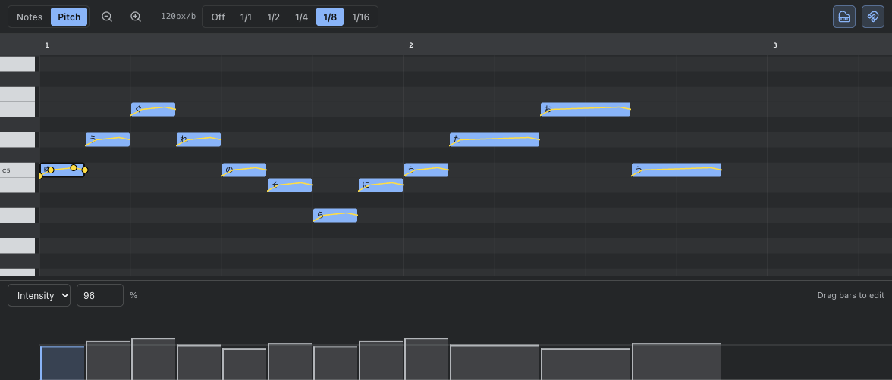

Song editor
Song editor
Open the editor. The starter phrase is ready to
play. Use New for an empty song or Open to load an existing file.

Tracks and parts
A track is a singer. Its inspector controls language, voice, level, and pan.
Mute and solo are available in the track header. Add track creates another
singer; the plus button in a track header adds a vocal part.
A part is a region of notes. Select it to open its notes in the piano roll. Drag
the part to move it in time, or onto another track to change its singer. Drag
the right edge to change its length.
The tempo field changes the initial tempo. Open the tempo/meter map beside it
to add changes later in the song. Map positions use project ticks: at the default
resolution, 480 ticks is one quarter note.
Notes and lyrics
In Notes mode, click an empty space in the piano roll to add a note. Drag a
note to move it; drag its right edge to resize it. The snap control determines
the timing grid. Select Off for tick-level placement.
Select a note to edit its lyric, pitch, start, and length in the inspector.
Leave phonemes empty to use the track language’s lyric conversion. Enter
space-separated phonemes to override that conversion for the note.
With the piano roll focused, Delete or Backspace removes the selected
note. Undo restores it.
Pitch and expression
Switch to Pitch to add and move pitch points. Existing curves remain visible
in either mode, including on unselected notes. The selected note shows handles
for its points; a handle can be dragged beyond the note’s vertical bounds.

Choose Intensity or Velocity in the expression lane below the piano roll.
Each bar spans a note’s duration. Drag vertically to set its value, or drag across
several bars to edit a phrase. A completed drag is one undo step. Escape
cancels the current drag.
- Intensity ranges from 0 to 200%, with 100% as the default.
- Velocity ranges from 0 to 127, with 100 as the default.
- The numeric field edits the selected note exactly.
- With the lane focused, Left/Right selects notes in time order.
- Up/Down changes the value by 1; hold Shift for steps of 10.
- Home/End sets the value to its minimum or maximum.
Playback and navigation
Press Space or click Play to start or pause playback. Stop returns the
playhead to the beginning. Both timelines can follow playback. Settings offers
Page follow, which advances at the viewport edge, and Smooth follow,
which moves the view with the playhead.
Scroll vertically to change the visible pitches. Scroll horizontally, or hold
Shift while scrolling, to move along the song. Hold Cmd/Ctrl while
scrolling to zoom. The toolbar also has zoom buttons.
Save and export
Save or Cmd/Ctrl+S downloads an .ichi project. This is the format to keep
while editing: it retains tracks, parts, voices, phonemes, expression, tempo and
meter maps, and mix settings. Older .ichikara documents also open.
The browser keeps a recovery draft on this device, but it is not a substitute
for saving a file. Clearing browser storage removes the draft. Opening another
song asks what to do when the current song has unsaved changes.
Score import reads all tracks. Conversion may flatten source regions into one
part per track. USTX export includes all tracks at their song positions, but
does not preserve Ichikara voices, mix settings, or every expression field.
Meter changes must be on bar boundaries for score export; .ichi can retain
changes at other ticks.
WAV export renders the whole song in stereo with the current track mix. Choose
44.1 or 48 kHz in Settings before playback or export.
Workspace settings
Drag a divider to resize the inspector, arrangement/piano split, expression
lane, track headers, or track rows. Focus a divider and use arrow keys for
keyboard resizing; Home/End moves it to its available limits.
Settings also controls the keyboard and expression lane visibility, default
snap, note height, selection color, and playback prebuffer. These preferences
stay on this device and do not change the song or its undo history.